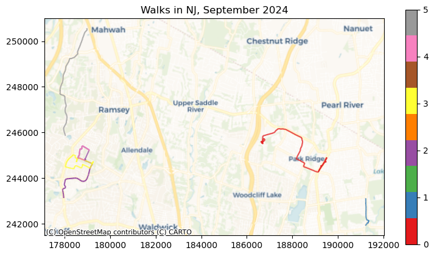
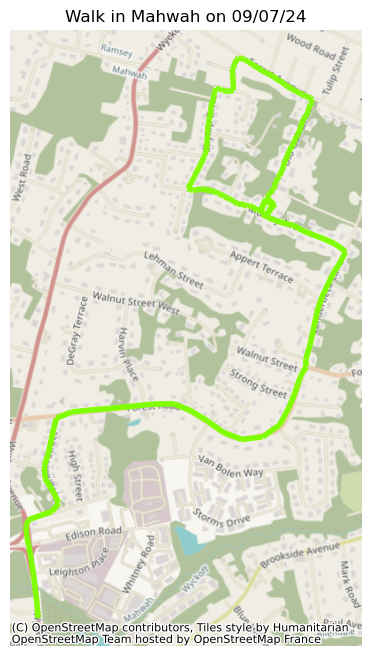
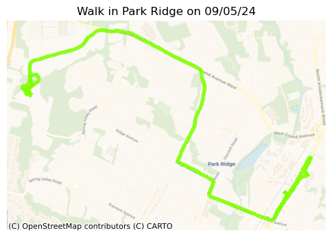
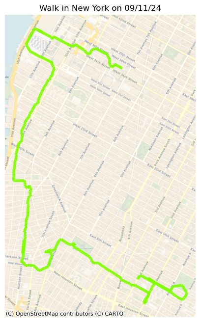
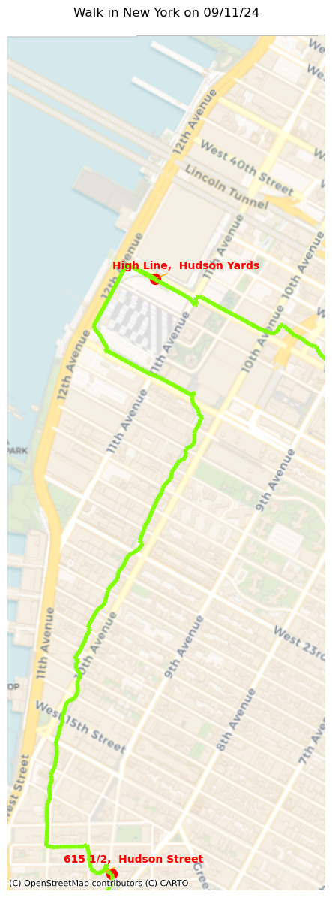
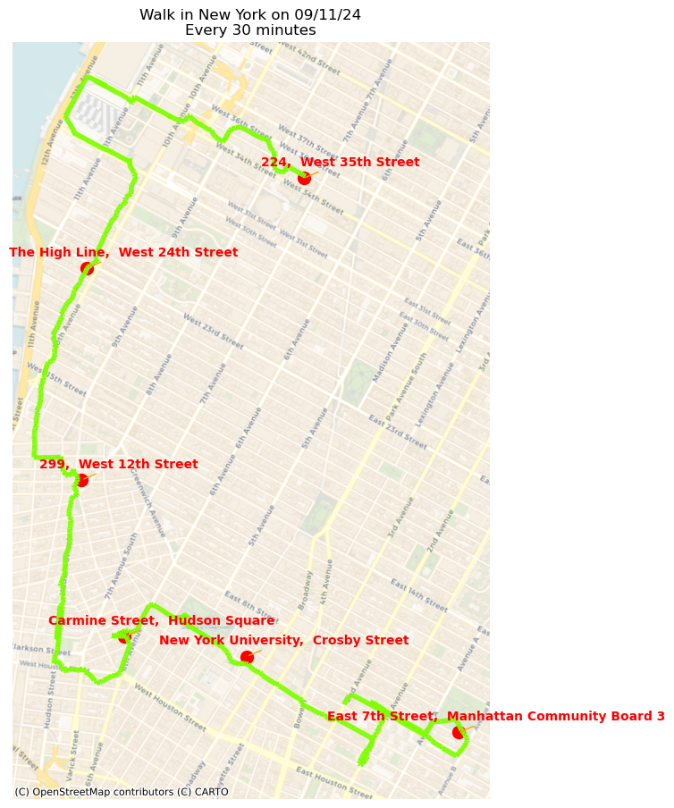
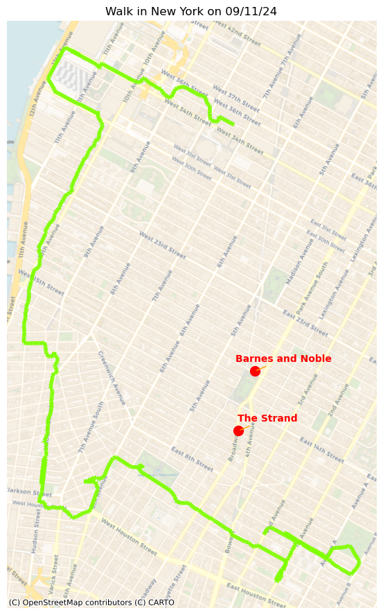
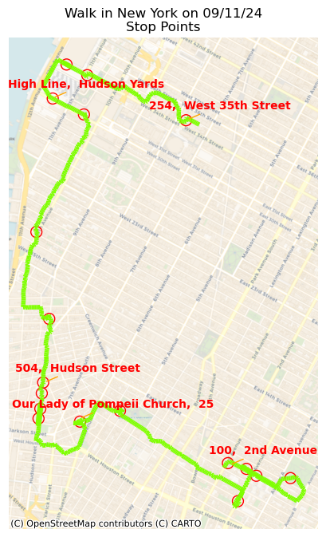
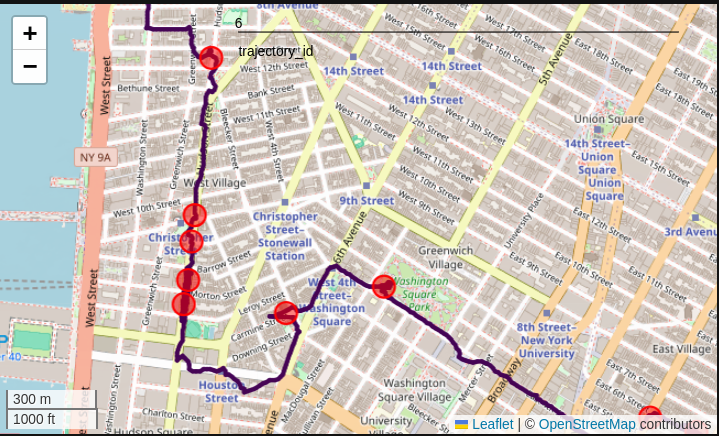

From Points to Paths
Introduction
In the prior article, I showed how to use raw GPS data generated from a sport tracker to create maps and profile elevations along the path. The GeoDataFrames created were just a collection of point geometries with time, location and elevation data. To profile, for example, speed, requires converting the point geometries to line geometries, calculating distances and time deltas between each point, and converting between coordinate systems and units of measurement. If we were concerned with bearing, we would need to also calculate angles between the line segments we create. None of this is overly complicated, just awfully tedious. But this being Python, there is a dedicated library that makes all of this easy peasy.
MovingPandas is a library that extends Pandas/Geopandas by taking the list of point geometries and turning them into “trajectories”. It generates directed lines between consecutive points, and provides functions for all of the calculations I mentioned above and more.
In this article I will show how to create and work with trajectories. I’ll then show how to use MovingPandas to find locations along the path based on time, find the distance from the path to nearby locations, and finally how to identify locations where I paused or stopped. In the next article, I will show how to simplify and smooth paths, profile speed, and segment the trajectories based on various criteria. As before, an expanded version of the code in this article is available in my repository.
Getting ready for MovingPandas
I’ll start by loading the necessary libraries and creating a helper function for mapping as well as some defaults for annotating points on the maps. Then i will load some data converted from raw GPS data as described in the previous article.
import pandas as pd
import geopandas as gpd
import movingpandas as mpd
import matplotlib.pyplot as plt
import contextily as ctx
from datetime import datetime, timedelta
from geopandas.tools import reverse_geocode, geocode
import warnings
warnings.filterwarnings('ignore')
def t_plot(traj,
figsize=(6,8),
source=ctx.providers.CartoDB.Voyager,
title=None):
f, ax = plt.subplots(figsize=figsize)
traj.plot(ax=ax, lw=4, color='chartreuse')
ctx.add_basemap(ax, crs=traj.crs,
source=source)
ax.set_axis_off()
if title:
ax.set_title(title)
else:
ax.set_title(
f'Walk in {traj.df.Name[0]} on {traj.df.index[0].strftime('%x')}'
)
return f, ax
annot_props = dict(
xytext=(3, 1),
textcoords="offset fontsize",
c='r', weight='bold', ha='center',
arrowprops=dict(arrowstyle='-', ec='orange')
)
df = pd.read_csv('data/b3/combined.csv')
gdf = gpd.GeoDataFrame(
df,
geometry=gpd.points_from_xy(x=df.Lon, y=df.Lat),
crs=4269
).to_crs(32111)MovingPandas requires an integer id for each walk, which I don’t have, so I’ll create one based on the string id. I’ll also convert the Time from a generic object to datetime64.
idList = list(gdf.groupby(['Id']).nunique().reset_index().Id)
for i, track in enumerate(idList):
gdf.loc[gdf.Id == track, 'trajectory_id'] = i
gdf['Time'] = pd.to_datetime(gdf.Time)
gdf.info()<class 'geopandas.geodataframe.GeoDataFrame'>
RangeIndex: 3044 entries, 0 to 3043
Data columns (total 10 columns):
# Column Non-Null Count Dtype
--- ------ -------------- -----
0 Id 3044 non-null object
1 Name 3044 non-null object
2 Lat 3044 non-null float64
3 Lon 3044 non-null float64
4 Elev 3044 non-null int64
5 Time 3044 non-null datetime64[ns, UTC]
6 Temp 3044 non-null float64
7 Weather 3044 non-null int64
8 geometry 3044 non-null geometry
9 trajectory_id 3044 non-null float64
dtypes: datetime64[ns, UTC](1), float64(4), geometry(1), int64(2), object(2)
memory usage: 237.9+ KBOne of the walks in the collection was in New York City, and the rest in New Jersey. Since the locations are pretty far apart, I’ll split out the NYC walk from the others.
gdf_nj = gdf.loc[gdf.Name != 'New York']
gdf_ny = gdf.loc[gdf.Name == 'New York']
gdf_nj.shape, gdf_ny.shape((2063, 10), (981, 10))Getting going with MovingPandas
Now I’m ready to create the trajectories. The data will be imported as a Trajectory Collection which will contain the individual Trajectories. I’ll first create one from the NJ group, which contains several walks.
tc_nj = mpd.TrajectoryCollection(
gdf_nj, 'trajectory_id',
t='Time', x='Lon', y='Lat'
)
print(tc_nj)TrajectoryCollection with 6 trajectoriesLet’s see what this looks like.
ax = traj_collection.plot(
column='trajectory_id',
legend=True, figsize=(9,5), cmap='Set1')
ax.set_title('Walks in NJ, September 2024')
ctx.add_basemap(ax, crs=gdf_proj.crs,
source=ctx.providers.Esri.WorldTopoMap);
I can extract a single trajectory and its underlying data frame.
traj_nj1 = tc_nj.trajectories[2]
print(traj_nj1)Trajectory 2.0 (2024-09-07 21:20:23.975000 to 2024-09-07 22:03:42.022000) | Size: 267 | Length: 5173.1m
Bounds: (177912.1946985984, 243124.49067874879, 179216.17084672116, 245408.85808260852)
LINESTRING (178912.27991325516 244815.1747420021, 178912.27991325516 244815.1747420021, 178903.67850The associated data is stored in the df attribute:
print(traj_nj1.df.info())<class 'geopandas.geodataframe.GeoDataFrame'>
DatetimeIndex: 267 entries, 2024-09-07 21:20:23.975000 to 2024-09-07 22:03:42.022000
Data columns (total 9 columns):
# Column Non-Null Count Dtype
--- ------ -------------- -----
0 Id 267 non-null object
1 Name 267 non-null object
2 Lat 267 non-null float64
3 Lon 267 non-null float64
4 Elev 267 non-null int64
5 Temp 267 non-null float64
6 Weather 267 non-null int64
7 geometry 267 non-null geometry
8 trajectory_id 267 non-null float64
dtypes: float64(4), geometry(1), int64(2), object(2)
memory usage: 29.0+ KB
Nonet_plot(traj_nj1, source=ctx.providers.OpenStreetMap.HOT);
Another way to extract a specific trajectory is using MovingPandas’ filter function, as so:
t_plot(
tc_nj.filter("Name", ["Park Ridge"])
.trajectories[0]
);
For the rest of the article I’ll use the longest trek I have in this data set, the one in New York. I’ll create the Trajectory Collection, extract the single trajectory and find the start and end times and locations.
tc_ny = mpd.TrajectoryCollection(
gdf_ny, 'trajectory_id',
t='Time', x='Lon', y='Lat'
)
traj_ny = tc_ny.trajectories[0]
st = traj_ny.get_start_time()
sl = traj_ny.to_crs(4269).get_start_location()
et = traj_ny.get_end_time()
el = traj_ny.to_crs(4269).get_end_location()
print(f'''
Time Location (Lon/Lat)
Start: {st.strftime('%X')} {sl.coords[0]} degrees
End: {et.strftime('%X')} {el.coords[0]} degrees
Duration: {traj_ny.get_duration().seconds/60:.0f} minutes
Distance: {traj_ny.get_length(units='mi'):.2f} miles
Direction: {traj_ny.get_direction():.0f} degrees
''') Time Location (Lon/Lat)
Start: 17:43:42 (-73.991157, 40.752025) degrees
End: 20:49:09 (-73.98894, 40.726903) degrees
Duration: 185 minutes
Distance: 6.69 miles
Direction: 176 degreest_plot(traj_ny);
Right place, right time
First, let me find my position at an arbitrary time, and then 30 minutes later. Where was I, for example, at 18:00, and then 45 minutes later?
t = datetime(2024, 9, 11, 18)
t2 = t + timedelta(minutes=45)
print(f'''
Nearest: {traj_ny.to_crs(4269)
.get_position_at(t, method='nearest')}
Interpolated: {traj_ny.to_crs(4269)
.get_position_at(t, method='interpolated')}
Previous row: {traj_ny.to_crs(4269)
.get_position_at(t, method='ffill')}
Next row: {traj_ny.to_crs(4269)
.get_position_at(t, method='bfill')}
''') Nearest: POINT (-74.003574 40.756368)
Interpolated: POINT (-74.00361304734385 40.75638409846633)
Previous row: POINT (-74.003688 40.756415)
Next row: POINT (-74.003574 40.756368)I can use the geocode tool provided by geopandas to get the nearest addresses at these points so I can show them on the map. Pay attention to crs, since nominatim expects lat/lon coordinates and we currently have projected coordinates.
point = traj_ny.get_position_at(t, method='interpolated')
point_up = traj_ny.to_crs(4269).get_position_at(t, method='interpolated')
point2 = traj_ny.get_position_at(t2, method='interpolated')
point2_up = traj_ny.to_crs(4269).get_position_at(t2, method='interpolated')
rg = reverse_geocode(
[point_up, point2_up],
provider="nominatim",
user_agent="your_project",
timeout=10
).to_crs(32111)
f, ax = t_plot(traj_ny)
gpd.GeoSeries(point).plot(ax=ax, color='red', markersize=100)
gpd.GeoSeries(point2).plot(ax=ax, color='red', markersize=100)
for x, y, label in zip(rg.geometry.x, rg.geometry.y, rg.address):
ax.annotate(f'{label.split(',')[0]}, {label.split(',')[1]}',
xy=(x, y), **annot_props)
ax.set_ylim(211500, 214500)
ax.set_xlim(191400, 192500);
It might be more interesting to plot my location at regular intervals along the walk. What about plotting my location every 30 minutes?
int_count = (et - st) // timedelta(seconds=(60*30))
int_length = (et - st) / int_count
intervals = [st + (i*int_length) for i in range(int_count)]
interval_points = [traj_ny.to_crs(4269).get_position_at(
t, method='interpolated')
for t in intervals]
rg = reverse_geocode(
interval_points,
provider="nominatim",
user_agent="your_project",
timeout=10
).to_crs(32111)
f, ax = t_plot(traj_ny, figsize=(7,11))
rg.plot(ax=ax, c='r', markersize=100)
for x, y, label in zip(rg.geometry.x, rg.geometry.y, rg.address):
ax.annotate(f'{label.split(',')[0]}, {label.split(',')[1]}',
xy=(x, y), **annot_props)
ax.set_title(ax.get_title() + f'\nEvery 30 minutes');
I was so close
Not only can you calculate distances along the path, which we will look at more in the next article, but you can calculate the distance from points along the trajectory to other locations not on the path. It will determine the closest you came to other points, lines or polygons, including, of course, other trajectories. For example, when I’m in New York, I love to visit the Strand and the huge Barnes and Noble on Union Square. I didn’t have time this trip, sadly, but I’m curious how close I was from those stores.
addresses = [{
'id': 1,
'name': "The Strand",
'addr': "828 Broadway, New York, NY 10003"
},
{
'id': 2,
'name': "Barnes and Noble",
'addr': "33 East 17th Street, 10003, New York"
}]
add_df = pd.DataFrame(addresses)
geo = geocode(
add_df['addr'],
provider='nominatim',
user_agent='your_project',
timeout=10
)
book_stores = geo.join(add_df).to_crs(32111)
print(book_stores) geometry \
0 POINT (192997.822 211055.516)
1 POINT (193108.568 211461.041)
address id name \
0 Strand Bookstore, 828, Broadway, University Vi... 1 The Strand
1 Barnes & Noble, 33, East 17th Street, Union Sq... 2 Barnes and Noble
addr
0 828 Broadway, New York, NY 10003
1 33 East 17th Street, 10003, New Yorkdists_to = [traj_ny.distance(book_stores.loc[i, ['geometry']],
units='mi')[0]
for i in range(len(book_stores))]
store_names = [book_stores.loc[i, 'name']
for i in range(len(book_stores))]
for i in range(len(book_stores)):
print(f'Closest distance to {store_names[i]} was {dists_to[i]:.1f} miles') Closest distance to The Strand was 0.4 miles
Closest distance to Barnes and Noble was 0.6 milesf, ax = t_plot(traj_ny, figsize=(7,11))
book_stores.plot(ax=ax, color='red', markersize=100)
for x, y, label in zip(book_stores.geometry.x,
book_stores.geometry.y,
book_stores.name):
ax.annotate(label, xy=(x,y), **annot_props)
Stop detection
In this final section I’ll look at stop detection. Here I’ll just be considering stop locations. In the next article, I’ll show how to use the same approach as one method for segmenting the trajectories. Stop detection requires instantiation of a stop detector which will provide the functions needed.
detector = mpd.TrajectoryStopDetector(traj_ny)The detector takes parameters to determine how long a pause constitutes a stop, and how far you need to move to constitute movement.
stop_points = detector.get_stop_points(
min_duration=timedelta(seconds=120), max_diameter=100
)
len(stop_points)18We can look up the addresses nearest to the stop points, and plot some of them on the map.
stop_points = stop_points.set_crs(32111)
rg = reverse_geocode(
stop_points.to_crs(4269).geometry,
provider="nominatim",
user_agent="your_project", timeout=10
).to_crs(32111)f, ax = t_plot(traj_ny)
stop_points.plot(ax=ax, color='none', markersize=100, ec='r')
point_labels = [0,3,7,11,17]
for (x, y), label in zip(
rg.iloc[point_labels].geometry.apply(
lambda p: p.coords[0]),
rg.iloc[point_labels].address):
ax.annotate(f'{label.split(',')[0]}, {label.split(',')[1]}',
xy=(x, y), **annot_props)
ax.set_title(ax.get_title() + f'\nStop Points');
Interactive graphing
Showing interactive graphing in the context of a published article is not very useful, but I should point out that MovingPandas supports both hvplot with folium as well as GeoPandas’ explore(), both of which can be useful tools for identifying areas of interest. This is an example with explore().
m = traj_ny.explore(
column="trajectory_id",
tooltip="t",
popup=True,
style_kwds={"weight": 4},
name="Time",
)
stop_points.explore(
m=m,
color="red",
tooltip="stop_id",
popup=True,
marker_kwds={"radius": 10},
name="Stop points",
)
Next steps
In the third article, I will address issues of generalization and simplification which can be important when working with large data sets. I’ll show how to generate speed, duration and distance information, and how to segment the trajectories based on geometries, stops, and other criteria. I hope that these articles are proving interesting and useful. Please visit my website and repository for more code, articles and updates.